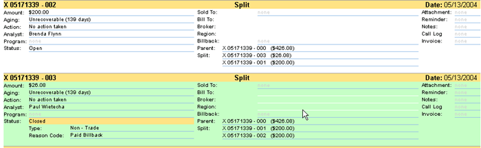

Blacksmith Applications, www.blacksmithapps.com
Home > Billbacks > Deduction Reporting
When you select the Deduction Reporting link, the Deductions Advanced Search page displays.
There are 3 sections in the advanced search page: Deduction, Customer, and Geographic Location.
Deduction search selections include:
Deduction Number, Check Number, Amount$ (operators include greater than, less than, equal to and between), Deduction Date (operators include greater than, less than, equal to and between), Aging state, Status, Deduction Analyst, Current Action, Reason Code, and Closure Date (operators include greater than, less than, equal to and between).
Customer search selections include:
Sold To (click the magnifying glass to display the customer search page), Broker (click the magnifying glass to display the broker search page), Family and Bill To.
Geographic Location search selections include:
Zone, Region, Market, Line of Business.
Click the [reset] link to clear search selections, and click [build report] to display the search results.
When the search results display, you can select the following links:
[ detailed view ] [ export data ] [ email ] [ fax ] [ print ]
If you select the [detailed view] link, each deduction row is expanded to show information similar to the following example:
